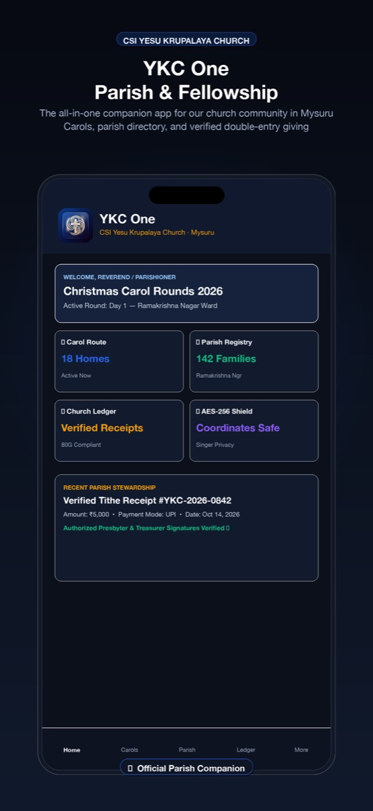
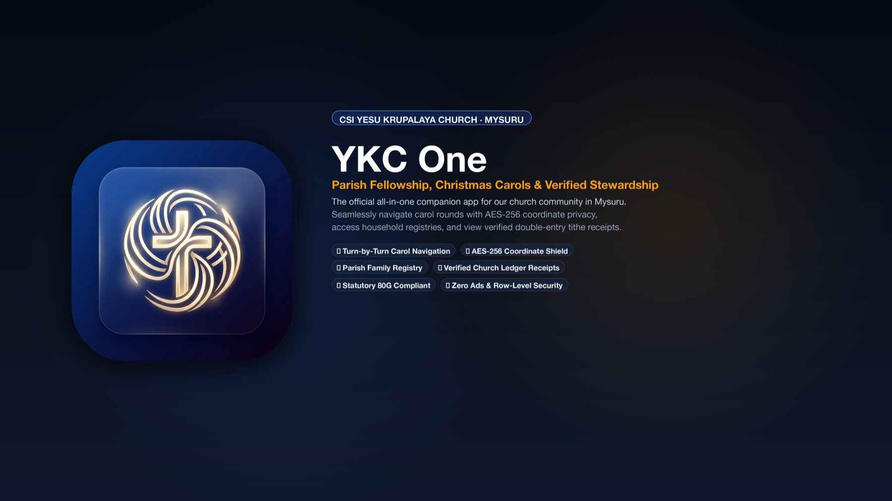
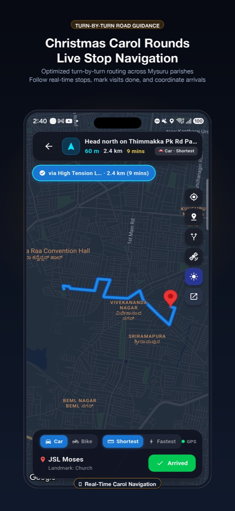
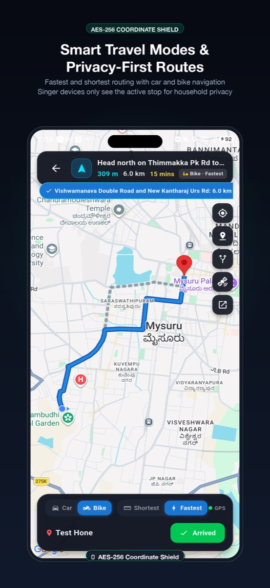
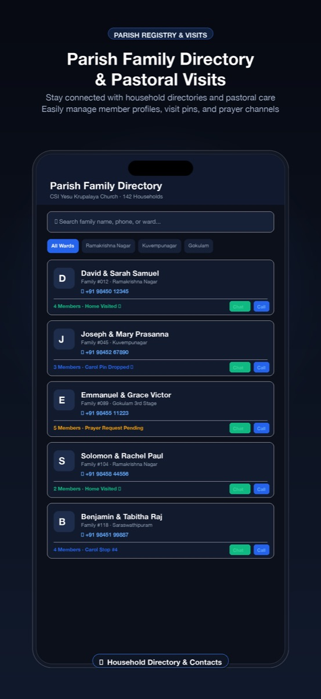
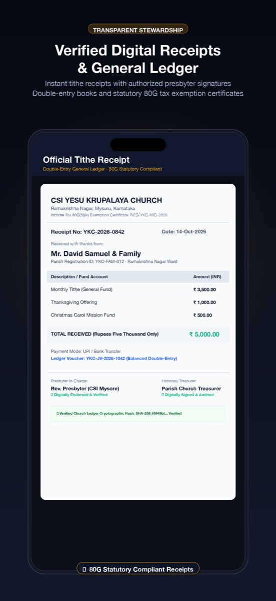

Android
- Navigation keeps guiding with the screen locked, with a "Carol navigation active" notification
- Your home pin opens straight in your maps app
- Material 3 design with predictive back and touch ripples
Official app · CSI Yesu Krupalaya Church, Ramakrishna Nagar, Mysuru
Carol teams find every home without seeing the whole map. Families keep their details current. Every tithe comes back as a signed receipt.
For registered families and church staff. Sign-in details come from the church office.


Who it's for
Access is set by the church. Each person signs in to a view built for what they do.
Sign in with your phone number and a one-time code from the church office, then set your own PIN.
Sees: your own household and your own receipts.
Follow turn-by-turn directions from home to home on carol nights.
Sees: only the next stop on tonight's route.
Keep the family directory up to date: names, phone numbers and addresses.
Sees: the directory, never the church books.
Record tithes and offerings, post vouchers and sign receipts.
Sees: the full double-entry books.
A walk through the app
Stop 1 · Carol rounds
Routing tuned for Mysuru's layouts, from Ramakrishna Nagar to Kuvempunagar and Gokulam. Mark each visit done and the next home appears.

Stop 2 · Privacy shield
Every household's location and door directions are encrypted with AES-256. Singers' phones only ever reveal the home they are walking to now.

Stop 3 · Parish directory
Household profiles with members and contact details, grouped by ward. Pastors can plan home visits and follow up on prayer requests.

Stop 4 · Church giving
Tithes, thanksgiving offerings and mission funds each get an official receipt, signed by the presbyter and treasurer and backed by balanced double-entry books.

Download
The same parish, routes and receipts on both, each built to feel at home on its own phone.
How to sign in. Family heads use their registered phone number and a one-time code from the church office, then can set a personal PIN. Church staff sign in with the email the office set up for them.
Privacy
The short version. The full policy covers every permission and record type.